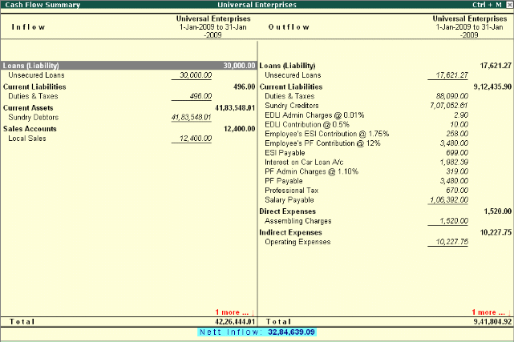

Cash Flows
To View Cash Flow Summary, Tally.ERP 9 provides you with a cash flow statement to track the movement of cash flow i.e. cash inflows as well as cash outflows (both cash & bank included) of your business. The report also displays a net flow for any period.
Go to Gateway of Tally > Display > Cash/Funds Flow > Cash Flow
# Select a month
